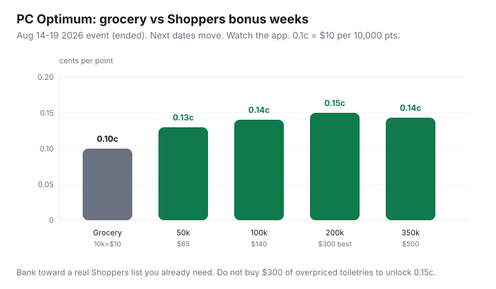

Food & Groceries · Canada
How to maximize PC Optimum points without overspending at Loblaw banners

PC Optimum is not a 1% cash-back card you ignore at the till. Grocery banners generally pay no base earn for free members. The points live in personalized offers, weekly events, Shoppers bonus redemption windows, and (if you want them) PC Financial Mastercards. People leave money on the table in two opposite ways: they never open the app, or they chase a 20× multiplier on a product they will not eat.
This is a Loblaw-Canada stacking playbook — No Frills, Superstore, Maxi, Provigo, Shoppers Drug Mart / Pharmaprix, Esso and Mobil — with community-proven timing from Personal Finance Canada and RedFlagDeals, not a U.S. grocery-points blog. Pair it with the comparison in PC Optimum vs Scene+ vs Moi so you do not migrate your whole cart for a hobby.
Key takeaways
- Free grocery earn is offers-only. Load them every Sunday before you shop.
- 10,000 points = $10 in-store is the default. Shoppers bonus events and some Esso car washes can double the cents-per-point.
- A no-fee PC World Elite (about 30 points per $1 at grocery, ~3%) is enough for most Loblaw households.
- Insiders World Elite ($120 fee, about 40 points per $1, Express Pass bundled) is a delivery-and-volume product, not a personality.
- If the offer requires a store you should not visit, or a SKU you will waste, skip it.
- PC Optimum redeems in blocks of 10,000 points for $10, so one point is worth 0.1 cents; points do not expire, but an account can be closed after two years with no activity (checked 23 Oct 2026).
What PC Optimum points are worth (checked Oct 2026)
Converting an offer into a percentage is the fastest way to see if it is worth changing what you buy. At 10,000 points = $10, the conversion is simple.
| Offer | Points on a $100 spend | Worth | Effective return |
|---|---|---|---|
| 10 points per $1 | 1,000 | $1.00 | 1% |
| 15 points per $1 | 1,500 | $1.50 | 1.5% |
| 25 points per $1 | 2,500 | $2.50 | 2.5% |
| 5,000 points on a $50 spend | 5,000 (on $50) | $5.00 | 10% of that $50 |
A “spend $50, get 5,000 points” offer is a 10% return only if you would have spent the $50 anyway. If it makes you buy $15 you did not need, the real return is $5 back on $15 of waste. You need 10,000 points before you can redeem anything.
Why grocery banners have no base earn (and what that means)
Scene+ and PC Optimum both run grocery as an offers program for free members. Moi is the odd one with a published base earn — and even that is weaker in Ontario than in Quebec. If you shop No Frills and never open the PC Optimum app, you are paying discounter prices (good) and leaving the rebate layer at zero (sloppy).
Worked example (labelled): $180 No Frills week, no card, no loaded offers → about $0 in points. Same cart with three relevant offers (yogurt, chicken, detergent) might return $1–$4. A no-fee World Elite at 30 points per $1 adds about $5.40 on $180 before offers (30 × 180 = 5,400 points ≈ $5.40 at 0.1¢). Offers stack on top when the SKU qualifies. The shelf price still matters more than any of this — see the banner rotation.

Weekly ritual: load personalized offers before you shop
Park this inside the 20-minute Sunday loop. Open PC Optimum, tap through the weekly and personalized tiles, load only what is already on the list. Three minutes. Not a second shop.
- Build dinners from Flipp and the fridge, not from the offer wall.
- Load offers that match those SKUs (or close substitutes you would buy anyway).
- Screenshot one high-value offer if the till sometimes misses it — rare, but useful at Shoppers.
- Shop the matching Loblaw banner. Scan the card or tap the Mastercard.
- Do not drive to a second Loblaw store to “use” a $0.40 cracker offer.
RedFlagDeals grocery threads are useful for spotting national events (bonus redemption at Shoppers, surprise-and-save style weeks). They are not a shopping list. If a thread is excited about a multiplier on pop, and you do not drink pop, keep scrolling.
Stacking flyer sales + offers without buying junk
The clean stack at No Frills is: Won’t Be Beat match (or the store’s own flyer price) + a loaded PC offer on that SKU + card earn if you have a PC Mastercard. You cannot match a competitor’s member-only price. You can still earn on the dollars you pay.
Junk is anything that fails the fridge test: would this be on the list if the offer were zero? If no, it is not a stack. It is a donation to the manufacturer with extra steps. Surplus meat from Flashfood is a better protein play than a 15× offer on a novelty sauce.
Shoppers Drug Mart earn and bonus redemption events
Shoppers is where PC Optimum often pays rent. Public 2026 card tables (creditcardGenius, Ratehub, issuer PDFs) describe roughly 25–50 points per $1 at Shoppers depending on which PC Mastercard you hold, versus 10–40 at grocery. Redemption default is still 10,000 = $10.
Bonus redemption events — community-tracked around Black Friday and periodic Shoppers campaigns — can lift that toward 10,000 points = $20 on eligible purchases, doubling cents-per-point to 0.2¢. Ratehub has also described large-balance examples (250,000 points → up to $400 instead of $250). Dates move. Watch the app, not a screenshot from 2023.
The Shoppers trap: earning 4.5% on shampoo you would have bought at No Frills for 30% less is a loss. Use Shoppers for pharmacy, a short list of toiletries that are actually priced, and bonus-redemption weeks on a list you already needed. Do not turn Shoppers into a grocery store.
Esso/Mobil fuel and car-wash redemption math
Esso’s public PC Optimum FAQ (reviewed Sep 2026): members earn 10 points per whole litre on fuel and 10 points per dollar on eligible convenience or car-wash purchases, plus personalized offers. PC Mastercard holders earn more per litre (issuer materials: at least 30 pts/L on ordinary PC cards; Insiders WE up to 70 pts/L with volume bonuses; extra 10 pts/L on some premium grades — confirm the live Esso page).
Redemption math that PFC/RFD actually uses:
- 4,000 points for 10¢/L on the first 40 litres → $4 off. That is 0.1¢ per point, same as grocery.
- 10,000 points for a car wash can beat 0.1¢ if that wash would have cost $15–$20. CreditcardGenius cites up to ~0.2¢ on a luxury wash. If you would never pay for a wash, grocery $10 is the honest value.
Do not drive out of the way for 10¢/L if the grocery redemption is sitting there. Fuel is a convenience burn, not a pilgrimage.
When a no-fee PC Mastercard is enough vs Insiders
| No-fee PC Mastercard ladder | PC Insiders World Elite | |
|---|---|---|
| Annual fee | $0 (Mastercard / World Elite tiers) | $120 (plus tax) |
| Grocery (typical) | 10 / 20 / 30 pts per $1 (~1–3%) | 40 pts per $1 (~4%) |
| Shoppers (typical) | 25 / 35 / 45 pts per $1 | 50 pts per $1 |
| Extra | Esso accelerators on the card | PC Express Pass bundled (listed at $99.99/year value) + higher Esso earn |
| Who it fits | Loblaw-heavy household that pays in full | Same, plus weekly Express delivery or pickup fees you already pay |
Break-even sketch for Insiders WE (labelled): $120 fee versus a no-fee WE. Extra grocery earn is about 10 points per $1 (1%). You need roughly $12,000 of eligible grocery to earn back the fee in points alone. If you already pay for a PC Express Pass ($99.99/year), the bundled pass does most of the work and the extra 1% is gravy. If you never use Express, the no-fee WE is the adult choice.
Do not confuse the Insiders Mastercard with the older PC Optimum Insiders subscription (points on PC organic, diapers, Joe Fresh). Public explainers say that subscription stopped taking new members years ago. If you still have it, read the in-app notice before you start an Express Pass — some sign-ups opt you out of the old subscription permanently.
PC Money Account is an offer type for people who want a no-fee spending account inside the PC ecosystem. It is not required to collect points.
Red flags: offers that push you into the wrong store
- A juicy Superstore offer when your discounter is No Frills and the rest of the cart will be 10–15% higher.
- Shoppers “grocery” extras that duplicate a cheaper No Frills staple.
- Any offer that needs a second trip across town.
- Multipliers on single-use gadgets, seasonal candy in January, or five flavours of yogurt you will not finish.
- Carrying a Mastercard balance. Interest erases 3% before the statement posts. Autopay from a chequing account that already holds the grocery float — see cards by banner.
Points are a rebate on the store you should shop anyway. The menu comes from Flipp and the fridge. The app is a three-minute overlay, not a personality.
The five-minute offer-loading habit
This section was merged from our former guide “The 5-Minute PC Optimum Offer-Loading Habit Canadians Skip” (last updated 1 Oct 2026). Figures keep their original checked dates.
The five-minute routine
- After the Thursday refresh, open Your Offers in the PC Optimum app.
- Load all offers. Loading is free, and you only earn on what you buy.
- Scan the list for items already on your grocery list or in your price book.
- Save useful personalized offers for next week if the option is shown and you do not need the item this week.
- Check the flyer for the same items: an offer stacked on a sale price can be the best price.
- At checkout, scan your card or app before paying.
Where to load offers
| Where | How |
|---|---|
| PC Optimum app | Tap Your Offers and load |
| PCOptimum.ca | Log in and click Offers |
| Weekly offers email | Select Load Offers |
Avoid the traps
- Spend-threshold offers (spend a set amount, get points) only help if you would reach the amount anyway.
- Points on a higher-priced item can still cost more than a cheaper store brand without points. Compare the net price.
- Offers expire; check the dates before you shop.
- Redeem points in $10 increments when it suits you; Shoppers bonus redemption events can stretch points.
Where the habit pays
PC Optimum points are earned and redeemed across Loblaw's family of stores, including grocery banners such as Loblaws, No Frills and Real Canadian Superstore, along with Shoppers Drug Mart, and at participating partners such as Esso and Mobil stations. Offers can be store-specific, so read where each one applies before you plan a trip. Points from different stores land in the same account.
| Offer type | How it works | Worth it when |
|---|---|---|
| Product offer | Points for buying a specific item | It is already on your list |
| Category offer | Points for spending in a category, such as produce | You would buy in that category anyway |
| Spend threshold | Points for spending a set amount in one trip | Your normal trip reaches it |
| Repeat or streak offer | Points for shopping several times or weeks | It matches your usual pattern |
Step by step: matching offers to your list
- Write the week's grocery list from your meal plan and pantry first.
- Open Your Offers and load everything.
- Mark offers that match items already on your list.
- For each, check the shelf or flyer price and compare it with your price book; points do not rescue an expensive price.
- Note which store each offer applies to and plan the trip.
- After the trip, check the points posted to your account against the offers you used.
Working out the real price
Because 10,000 points are worth $10, each 1,000 points is worth $1. To compare a points offer with a cheaper option, subtract the points value from the price. These numbers are an example with illustrative inputs: a $6 item with 1,000 bonus points works out to $5. If a store brand costs $4.50 without points, the store brand is still cheaper.
Common mistakes
- Loading offers after checking out; points only apply to loaded offers when you scan.
- Forgetting to scan the card or app.
- Buying unfamiliar items only for the points.
- Chasing a spend threshold with items you did not need.
- Using an offer at a store where it does not apply.
Example with illustrative inputs: what the habit earns
These numbers are an example with illustrative inputs, not real offers. A shopper loads offers and uses four on items already on the list: 500, 1,000, 500 and 2,000 points, for 4,000 points, worth $4. Without loading, the same trip earns only base points.
| Offer | Points |
|---|---|
| Yogurt | 500 |
| Chicken | 1,000 |
| Bread | 500 |
| Laundry detergent | 2,000 |
| Total | 4,000 (worth $4) |

When to bank points for Shoppers bonus redemption events
This section was merged from our former guide “When to bank PC Optimum points for Shoppers bonus redemption events” (last updated 9 Nov 2026). Figures keep their original checked dates.
How Shoppers bonus events improve point value
Shoppers runs a bonus redemption far more often than “a few times a year”. Community deal trackers (RedFlagDeals Hot Deals posts, Rewards Canada, GoFlyer) list eight regular events from January to October 2026: 9–14 Jan, 13–18 Feb, 6–11 Mar, 8–13 May, 29 May–3 Jun, 17–22 Jul, 14–19 Aug and 23–28 Oct. That is about one every six weeks (287 days from the first to the eighth start date, seven gaps). You still redeem in 10,000-point blocks, but posted tiers pay extra dollars off. All eight printed the same four tiers:
| Points | Discount | Vs default $10/10k | ¢ per point |
|---|---|---|---|
| 50,000 | $65 | +$15 | 0.13¢ |
| 100,000 | $140 | +$40 | 0.14¢ |
| 200,000 | $300 | +$100 | 0.15¢ (best rate) |
| 350,000 | $500 | +$150 | ~0.14¢ |

Typical exclusions: prescriptions, tobacco, stamps, transit passes. The purchase has to be large enough to absorb the discount: $300 off needs a cart of at least $300 before tax. Tax is usually calculated on the price before points. Redemptions run in 10,000-point increments up to 500,000, and the part of a redemption above the highest tier you reach is paid at the regular $10 per 10,000 (Milesopedia terms summary, updated Nov 2026). Caps and “up to” language matter — read the offer tile, not a screenshot from 2024.
Between the big events, some members also see one-day, in-store “special redemption” offers in the app — 90,000 points → $150 appeared in February, May, July, September and October 2026 on RedFlagDeals. They are targeted (not every account gets them) and usually must be loaded first.
Is the Black Friday super redemption always better?
No. The super events pay more at big balances, but their tiers sit at different point counts, so a mid-size balance can do better at a regular event. The last two super events used the same six tiers: Canada Day, 26 June–1 July 2026 (SaveaLoonie), and Black Friday, 28 November–3 December 2025 (r/ShoppersDrugMart posters): 50,000 → $75, 130,000 → $200, 250,000 → $400, 300,000 → $500, 400,000 → $700 and 500,000 → $900. As of 9 November 2026 Shoppers had not posted dates for a 2026 Black Friday event; check the PC Optimum app.
| Balance | Any day | Regular event (2026 tiers) | Super event (last two) |
|---|---|---|---|
| 100,000 | $100 | $140 | $125 |
| 200,000 | $200 | $300 | $270 |
| 250,000 | $250 | $350 | $400 |
| 300,000 | $300 | $400 | $500 |
| 500,000 | $500 | $650 | $900 |
The takeaway: on these tiers the super event paid more for most balances, except two bands where the regular event won — 100,000–120,000 points and 200,000–240,000 points (regular events come around every six weeks or so). From 250,000 up, the super tiers won every time — if you have a real list big enough to absorb the discount.
What to buy (and avoid) during bonus weeks
The Shoppers trap, restated: earning or burning 4–5% on shampoo that is 30% cheaper at No Frills is a loss. Bonus redemption is a sale on points, not a reason to treat Shoppers as a grocery store.
Buy: prescriptions’ front-store companions you already use (if eligible), toothpaste, deodorant, sunscreen, contact solution, a priced beauty item already on your list, baby gear you would have bought this month. Stack a loaded PC offer on the SKU if it applies.
Avoid: electronics Shoppers is bad at, seasonal candy, five serums, “grocery” milk and eggs unless the flyer is actually cheaper after you count the rest of the store, and anything you will not use before it expires. If the event requires $300 of spend and you only needed $40 of toothpaste, redeem $40 equivalent at grocery instead — or buy the toothpaste and leave the rest of the points for grocery.
Banking strategy vs redeeming ASAP for groceries
Bank if: you are not cash-tight this month, Shoppers is a normal stop, and you are inside a typical event season (watch RedFlagDeals / the app, not a paper calendar). A household sitting on 80,000 points in early August 2026 who needed $40 of toiletries anyway could wait a week and take a better tier if they also had a real $65–$140 list. A household that needs $20 off chicken tonight should pull two $10 grocery bites. Points are not an emergency fund; groceries are.
Do not sit on 200,000 points “for the 0.15¢ week” while paying a PC Mastercard interest rate. Redeem, pay the card, rebuild. Inactivity and devaluation are the quiet risks on a 0.1¢ currency that can reprint event rules anytime.
Combining Esso car-wash value edge cases
Esso’s public PC Optimum FAQ (reviewed Sep 2026): 4,000 points for 10¢/L on the first 40 litres is 0.1¢ — same as grocery. 10,000 points for a car wash can beat that if the wash would have cost $15–$20 (community and credit-card explainers cite up to ~0.2¢ on a luxury wash). If you hose the car in the driveway, grocery $10 is the honest number. Do not drive across town for a wash to beat a Shoppers event you were going to use on toothpaste.
A simple calendar habit for event watchers
- Once a week, with the Sunday grocery loop, glance at PC Optimum “offers” and Shoppers tiles — 30 seconds, not a spreadsheet.
- Keep a running Shoppers list on the fridge (pharmacy + toiletries). When it hits ~$40–$80, you have a bonus-week job.
- If an event drops and the list is empty, redeem groceries. Do not invent a haul.
- After the event, screenshot the receipt once so you know what posted. Then stop thinking about points until next Sunday.
- Revisit card choice separately: a no-fee PC World Elite is enough for most Loblaw households (Mastercard fee math).
Points are a rebate on stores you should shop. Shoppers bonus week is a calendar overlay. The menu still comes from Flipp and the fridge.
Sources
- Ratehub, PC Optimum program explainer (2026 public comparison of earn/burn and Insiders notes).
- creditcardGenius, “How to Maximize the PC Optimum Program” (card earn table and Shoppers bonus-redemption examples, reviewed Sep 2026).
- PC Financial Insiders World Elite benefits PDF and Loblaw newsroom card launch copy (40 pts/$1 grocery, 50 at Shoppers, Express Pass value $99.99, $120 fee).
- Esso / Mobil PC Optimum FAQ (10 pts/L base; 4,000 pts for 10¢/L on first 40 L; card accelerators; reviewed Sep 2026).
- PC Optimum support: how to spend points (10,000 = $10 increments).
- PC Optimum (Loblaws), Understanding PC Optimum point expiry and redemption amounts: minimum redemption 10,000 points = $10, in blocks of 10,000; points do not expire but accounts can be closed after two years of inactivity (help page updated 1 Jun 2026). Checked 23 Oct 2026.
- PC Optimum support, How do I load my offers?, as of 1 Oct 2026. App (Your Offers), PCOptimum.ca (Offers) or the weekly email (Load Offers); offers update weekly on Thursdays; personalized offers can be saved for next week.
- PC Optimum, points value, as of 1 Oct 2026. 10,000 points = $10, redeemed in $10 increments.
- PC Optimum, participating stores and partners, as of 1 Oct 2026.
- The offers and points in the example table and chart are illustrative inputs.
- PC Optimum support: redeem in 10,000-point = $10 increments (reviewed Sep 2026).
- Rewards Canada and Milesopedia write-ups of the Shoppers bonus redemption event 14–19 Aug 2026 (tiers, exclusions, “up to” language). Event ended — not a live coupon.
- RedFlagDeals Hot Deals “bonus redemption” tag (2026 Shoppers event dates and one-day special offers), Rewards Canada (23–28 Oct 2026 event) and GoFlyer (24 Oct 2026), read 9 Nov 2026.
- Milesopedia, Shoppers Drug Mart bonus redemption event terms (10,000-point increments up to 500,000; cart must reach the discount; tax before points; portion above a tier at the regular rate), updated 7 Nov 2026.
- SaveaLoonie, PC Optimum Super Redemption Event 26 Jun–1 Jul 2026 (tiers), and r/ShoppersDrugMart Black Friday 2025 thread (28 Nov–3 Dec 2025 dates and tiers), read 9 Nov 2026.
- The Points Standard, PC Optimum point value (2026 index at 0.1¢; bonus events as the exception).
- Esso / Mobil PC Optimum FAQ (fuel and car-wash redemptions) reviewed Sep 2026.
Frequently asked questions
Do I earn PC Optimum points on every grocery dollar?
Not as a free member. Grocery banners are offers-and-events, not a flat percent. Skip the weekly load and you can earn close to nothing. Co-branded PC Financial Mastercards add a base earn on eligible purchases.
How much is 10,000 PC Optimum points worth?
At Loblaw grocery banners, Shoppers, and many Esso/Mobil stations the common redemption is 10,000 points = $10 (0.1¢ per point). Shoppers bonus redemption events can raise that. Some Esso car-wash redemptions can also beat 0.1¢ — read the pump/app screen.
Is the PC Insiders World Elite Mastercard worth the $120 fee?
Only if you already spend at Loblaw banners and will use the bundled PC Express Pass (publicly valued at $99.99/year) or the extra grocery earn. Many households are fine with a no-fee PC World Elite at about 30 points per $1 (~3%). Confirm current card pages.
Should I buy things I do not need to hit a multiplier?
No. A 20× offer on a product that becomes waste is a loss. Load offers for staples already on the list. The weekly grocery system decides the menu; points ride along.
Can I redeem points for a statement credit instead of groceries?
Some PC Financial products offer statement-credit redemptions that can be worse than 10,000 = $10 in-store. Prefer grocery, Shoppers bonus events, or a high-value Esso car wash. Read the current terms.
When do PC Optimum offers update?
Weekly, on Thursdays.
How do I load PC Optimum offers?
In the PC Optimum app under Your Offers, at PCOptimum.ca under Offers, or by selecting Load Offers in the weekly offers email.
Do I need to load offers to get the points?
Load them before you shop so they apply when you scan your card or app at checkout.
How much are PC Optimum points worth?
10,000 points are worth $10, redeemed in $10 increments.
Should I buy items just for the points?
Only if you would buy them anyway at a price you are happy with. Compare the net price with a cheaper option without points.
Where can I earn PC Optimum points?
Across Loblaw's family of stores, including grocery banners and Shoppers Drug Mart, and at participating partners such as Esso and Mobil stations. Check each offer's terms for where it applies.
How do I work out the value of a points offer?
Each 1,000 points is worth $1, because 10,000 points are worth $10. Subtract that value from the price to compare with a cheaper option.
Can I redeem PC Optimum points in any amount?
Points are redeemed in $10 increments, starting at 10,000 points. Check the app for current redemption options.
Do PC Optimum offers work at every store?
Not always. Some offers are specific to a banner or to Shoppers Drug Mart. Read where each offer applies before planning your trip.
How much are 10,000 PC Optimum points worth?
At Loblaw grocery banners, Shoppers Drug Mart / Pharmaprix, and many Esso/Mobil stations the default is 10,000 points = $10 (0.1¢ per point). Shoppers bonus redemption events can pay more on listed tiers. Some Esso car washes can also beat 0.1¢ if you would have paid cash for the wash.
Should I always wait for a Shoppers bonus event?
No. If the points would change this week’s grocery bill and you do not have a real Shoppers list, redeem $10 bites at No Frills. Bank when you are within a few weeks of a typical event window and you already buy pharmacy, toothpaste, or other priced SKUs there.
What did the August 2026 Shoppers event pay?
Community trackers (Rewards Canada, Milesopedia) listed 50,000 pts → $65, 100,000 → $140, 200,000 → $300, 350,000 → $500 from 14–19 August 2026. That event ended. The next one will reprint similar tiers or not — read the live app.
Is the Shoppers Black Friday super redemption always better than a regular event?
No. Using the last two super events’ tiers, 200,000 points paid $270 at a super event versus $300 at a 2026 regular event. From 250,000 points up the super tiers paid more ($400 versus $350 at 250,000). Match your balance to the tier, and check the live tiers in the PC Optimum app.
Can I redeem bonus-event points on everything at Shoppers?
No. Prescriptions, tobacco, stamps, and transit passes are commonly excluded. Your bill must reach the discount. Taxes are usually calculated before points. Confirm the current event terms on pcoptimum.ca.
Is this credit or investment advice?
No. It is a household points calendar. Do not carry a PC Mastercard balance to farm points. Interest erases 0.15¢ immediately.
Researched and drafted with AI assistance and fact-checked against official Canadian sources. How we create content.
Note: Compare applications on PC Financial’s site, and never carry a balance for points.